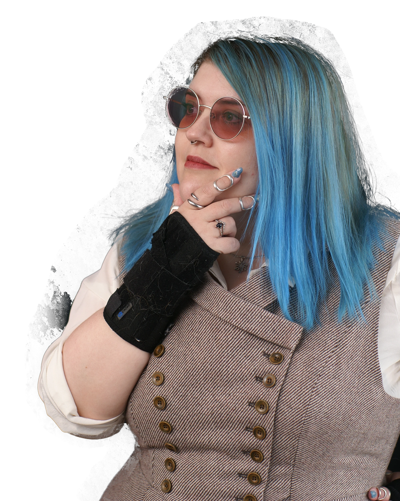

Josephine Snow

Bridging the Gap Between Design and Code
I am a UX Front-End Developer dedicated to building digital experiences that are as functional as they are beautiful. My approach goes beyond writing clean HTML, CSS, and JavaScript; I focus on understanding the human behind the screen. By combining a deep understanding of user psychology with technical precision, I craft responsive interfaces that guide users intuitively toward their goals. Whether you need a high-converting landing page or a complex web application, I deliver solutions that look great on any device and perform flawlessly. Let's turn your design concepts into engaging reality.